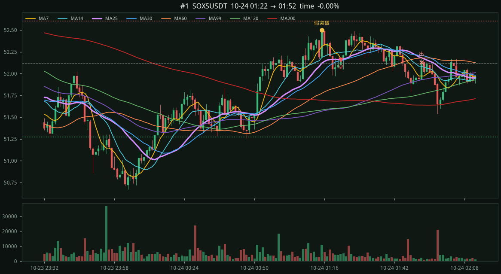
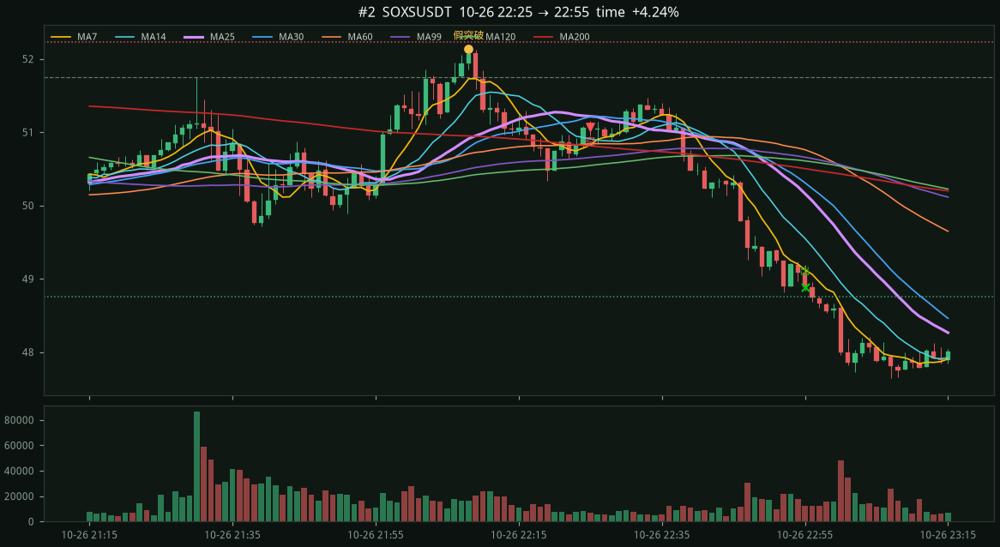
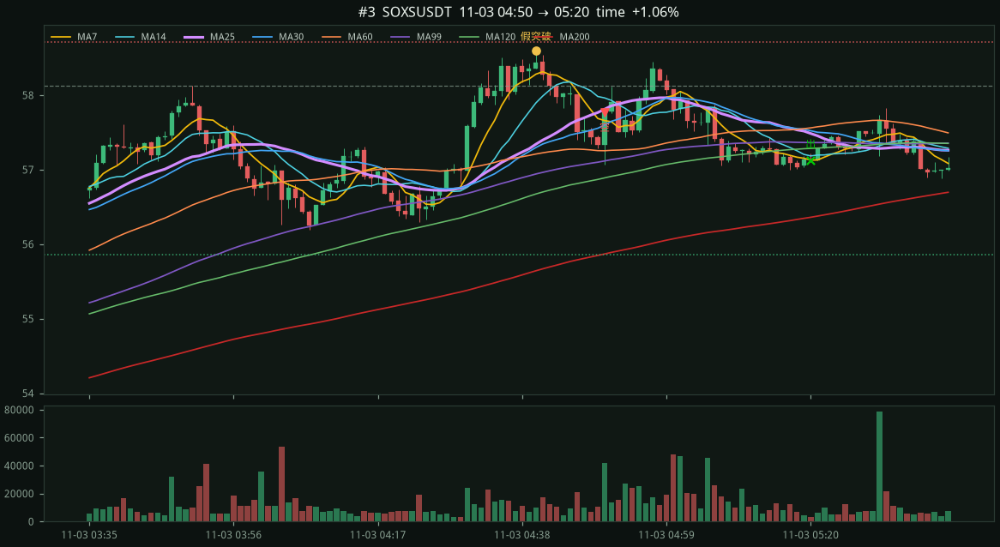
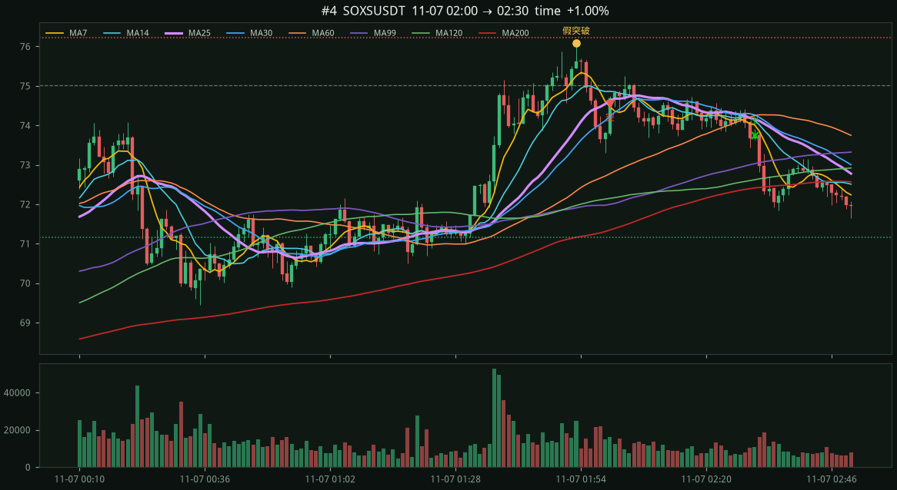
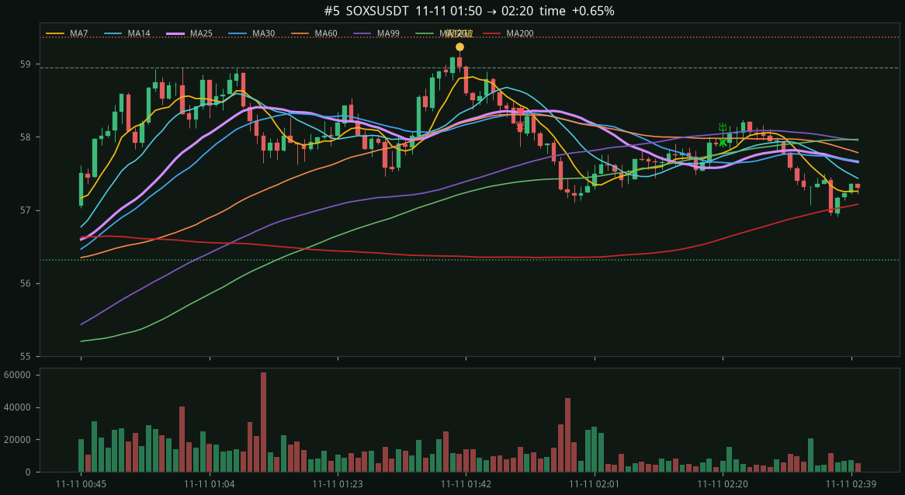
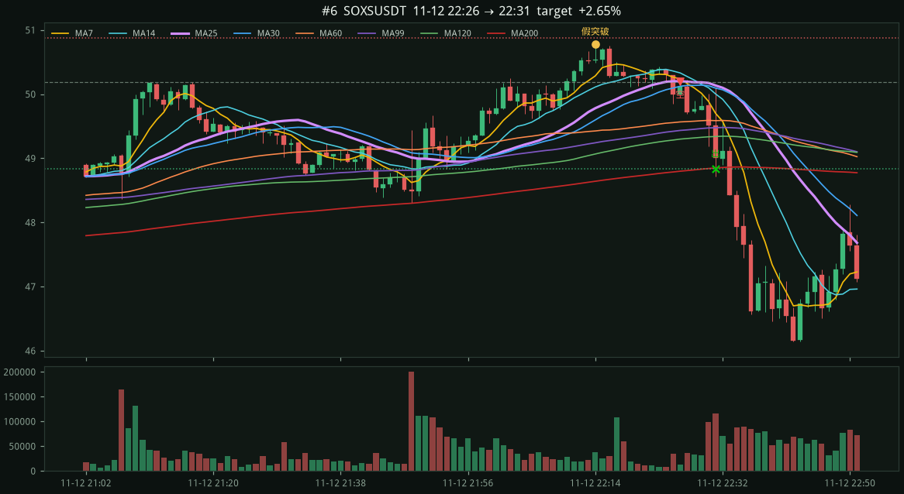
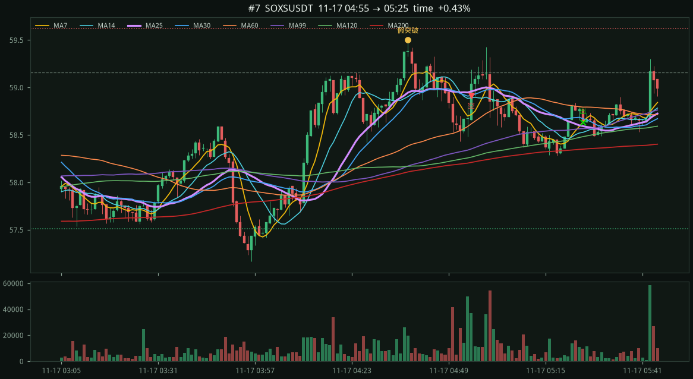
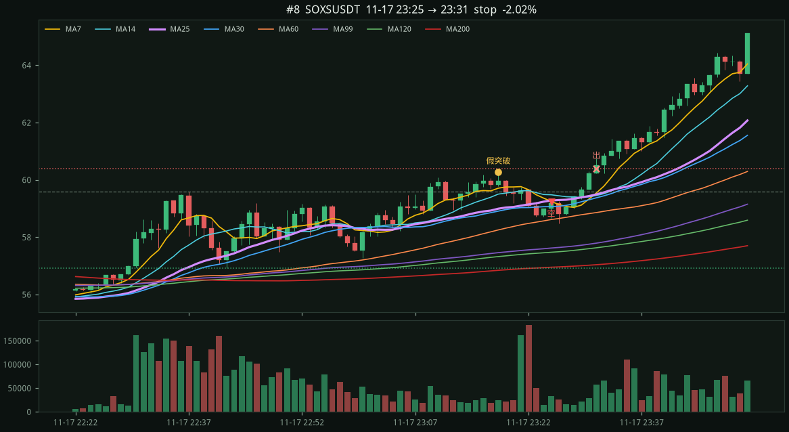
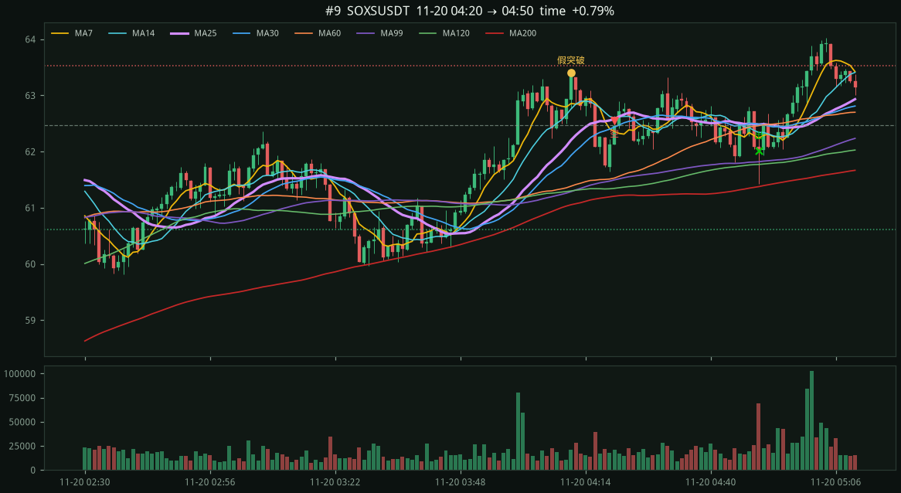

#1 · SOXSUSDT2026-10-24 01:22 → 10-24 01:52
-0.00%
entry 52.16 stop 52.60 (+0.44) target 51.27 exit 52.13 time 前高 10-23 23:24 52.12 假突破 10-24 01:15 52.50 跌破 10-24 01:21 MA7 52.18 / MA14 52.24 / MA25 52.16 / MA99 51.60

進場 2026-10-23 01:09 → 2026-11-22 01:09 台北時間 · K 線熱身從 2026-10-21 00:21 · 46129 根 · 進場模式 limit · 時段 ny_open
SOXSUSDT 1 分 K，時區 Asia/Taipei。未收盤的當根先丟掉。價格報酬是永續合約本身的漲跌，不是再乘保證金槓桿。SOXS 現貨本來就是 3 倍反向半導體；這裡沒有再疊一層槓桿，也沒有模擬強平。
漏斗：刺破前高 77 → 超漲過大放棄 11 → 跌破 MA25/30 40 → 進場 9
（非大賺結構 0 · MA99 空間不合 21 · 24h 暴衝熔斷 10 · 未空排 0 · 風險不合 5）
出場：停利 1 · 停損 1 · 時間 7 · 未走完 0
| 版本 | 筆數 | 勝率 | 淨報酬 | 合計 R |
|---|---|---|---|---|
| 優化主策略 v2 (離MA99 0.8–3.5%, 24h≤20%, TP 2R, 30m) | 9 | 77.8% | +8.80% | +5.47R |
| 極穩空排確認 v2 (MA14<MA25, 30m) | 3 | 100.0% | +5.56% | +2.93R |
| 舊版優化 v1 (無暴衝上限/無24h熔斷, TP 2.5R, 30m) | 12 | 58.3% | +4.31% | +3.24R |
| 初版寬鬆設定 (tpe_us, 不限MA99, 30m) | 32 | 43.8% | +0.92% | -0.10R |
上面每一張圖是優化主策略（30 分鐘內結算：先碰到停損或停利就出，否則用第 30 根收盤）。紅虛線是停損，綠虛線是停利，灰虛線是被刺破的前高。
同一 9 筆進場，若拿到第 60 根：先碰到停損 2 筆、先碰到停利 3 筆、時間到用收盤 4 筆。
entry 52.16 stop 52.60 (+0.44) target 51.27 exit 52.13 time 前高 10-23 23:24 52.12 假突破 10-24 01:15 52.50 跌破 10-24 01:21 MA7 52.18 / MA14 52.24 / MA25 52.16 / MA99 51.60

entry 51.07 stop 52.23 (+1.16) target 48.76 exit 48.88 time 前高 10-26 21:30 51.75 假突破 10-26 22:08 52.13 跌破 10-26 22:16 MA7 50.82 / MA14 50.91 / MA25 51.22 / MA99 50.65

entry 57.76 stop 58.72 (+0.95) target 55.86 exit 57.12 time 前高 11-03 03:50 58.12 假突破 11-03 04:40 58.60 跌破 11-03 04:48 MA7 57.66 / MA14 57.96 / MA25 57.81 / MA99 57.12

entry 74.54 stop 76.23 (+1.69) target 71.16 exit 73.75 time 前高 11-06 23:39 75.02 假突破 11-07 01:53 76.08 跌破 11-07 01:58 MA7 74.47 / MA14 74.86 / MA25 74.62 / MA99 72.00

entry 58.34 stop 59.36 (+1.02) target 56.31 exit 57.93 time 前高 11-11 01:00 58.95 假突破 11-11 01:41 59.24 跌破 11-11 01:49 MA7 58.43 / MA14 58.63 / MA25 58.34 / MA99 57.62

entry 50.20 stop 50.88 (+0.68) target 48.84 exit 48.84 target 前高 11-12 21:17 50.19 假突破 11-12 22:14 50.78 跌破 11-12 22:25 MA7 50.24 / MA14 50.33 / MA25 50.20 / MA99 49.43

entry 58.92 stop 59.62 (+0.70) target 57.51 exit 58.63 time 前高 11-17 02:37 59.16 假突破 11-17 04:38 59.50 跌破 11-17 04:48 MA7 58.71 / MA14 58.89 / MA25 58.96 / MA99 58.35

entry 59.24 stop 60.40 (+1.16) target 56.92 exit 60.40 stop 前高 11-17 22:37 59.58 假突破 11-17 23:18 60.28 跌破 11-17 23:23 MA7 59.25 / MA14 59.48 / MA25 59.28 / MA99 57.62

entry 62.55 stop 63.53 (+0.97) target 60.61 exit 62.02 time 前高 11-20 02:18 62.47 假突破 11-20 04:11 63.40 跌破 11-20 04:17 MA7 62.36 / MA14 62.60 / MA25 62.58 / MA99 61.50
